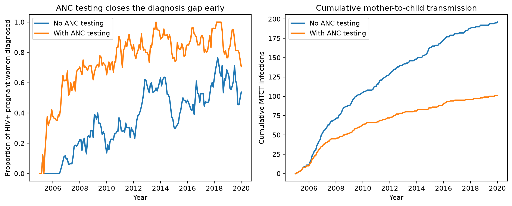

import numpy as np
import sciris as sc
import starsim as ss
import stisim as sti
import matplotlib.pyplot as plt
sc.options(dpi=110)PMTCT via ANC testing
Prevention of mother-to-child transmission (PMTCT) programs identify HIV-positive pregnant women during antenatal care (ANC) and start them on ART immediately, so both the mother and her unborn/breastfeeding child are protected. STIsim models this with three cooperating pieces:
sti.ANCTest— schedules a single ANC visit per pregnancy (gestational months 1–7) and tests attendees for HIV (and syphilis, if present). Positives are diagnosed and have ART scheduled for the same timestep — no diagnosis-to-treatment delay.sti.ART— passive; picks up anyone scheduled (ti_art == ti) and, once on treatment, reduces both maternal infectivity and (viapmtct_efficacy) the child’s susceptibility overMaternalNetandBreastfeedingNet.sti.InfantHIVTest— scheduled byANCTestfor the newborn of any mother who tested positive, firing at the modeled delivery timestep.
This example compares two scenarios that differ only in whether ANC testing is added on top of routine population-level HIV testing.
Setup
Building the sims
Both scenarios share the same routine HIVTest (a modest 8%/year testing rate, deliberately low so the ANC-specific effect is visible) and ART (60% coverage target). The ANC scenario layers ANCTest + InfantHIVTest on top — ART is unchanged and simply treats whoever gets scheduled, regardless of which testing pathway diagnosed them.
def make_sim(use_anc, rand_seed=1):
hiv_test = sti.HIVTest(name='hiv_test', test_prob_data=0.08)
art = sti.ART(coverage=0.6)
interventions = [hiv_test, art]
if use_anc:
infant_hiv = sti.InfantHIVTest(name='infant_hiv')
anc = sti.ANCTest(visit_prob=0.9, newborn_tests={'hiv': infant_hiv})
# anc/infant_hiv must precede art so same-step diagnoses can start ART
interventions = [hiv_test, anc, infant_hiv, art]
hiv = sti.HIV(init_prev=0.1, beta_m2f=0.05, beta_m2c=0.1)
sim = sti.Sim(
diseases=[hiv],
demographics=[ss.Pregnancy(), ss.Deaths()],
networks=[sti.StructuredSexual(), ss.MaternalNet(), ss.BreastfeedingNet()],
interventions=interventions,
n_agents=5_000, dur=15, start=2005, verbose=-1, rand_seed=rand_seed,
)
sim.label = 'With ANC testing' if use_anc else 'No ANC testing'
return sim
sims = ss.parallel([make_sim(False), make_sim(True)]).sims
results = {sim.label: sim for sim in sims}Initializing sim "No ANC testing" with 5000 agents
Initializing sim "With ANC testing" with 5000 agents
Running "No ANC testing": 2005 ( 0/181) (0.00 s) ———————————————————— 1%
Running "With ANC testing": 2005 ( 0/181) (0.00 s) ———————————————————— 1%
Running "No ANC testing": 2006 (12/181) (0.28 s) •——————————————————— 7%
Running "With ANC testing": 2006 (12/181) (0.29 s) •——————————————————— 7%
Running "No ANC testing": 2007 (24/181) (0.55 s) ••—————————————————— 14%
Running "With ANC testing": 2007 (24/181) (0.57 s) ••—————————————————— 14%
Running "No ANC testing": 2008 (36/181) (0.81 s) ••••———————————————— 20%
Running "With ANC testing": 2008 (36/181) (0.86 s) ••••———————————————— 20%
Running "No ANC testing": 2009 (48/181) (1.08 s) •••••——————————————— 27%
Running "With ANC testing": 2009 (48/181) (1.15 s) •••••——————————————— 27%
Running "No ANC testing": 2010 (60/181) (1.35 s) ••••••—————————————— 34%
Running "With ANC testing": 2010 (60/181) (1.43 s) ••••••—————————————— 34%
Running "No ANC testing": 2011 (72/181) (1.62 s) ••••••••———————————— 40%
Running "With ANC testing": 2011 (72/181) (1.71 s) ••••••••———————————— 40%
Running "No ANC testing": 2012 (84/181) (1.89 s) •••••••••——————————— 47%
Running "With ANC testing": 2012 (84/181) (2.03 s) •••••••••——————————— 47%
Running "No ANC testing": 2013 (96/181) (2.18 s) ••••••••••—————————— 54%
Running "With ANC testing": 2013 (96/181) (2.32 s) ••••••••••—————————— 54%
Running "No ANC testing": 2014 (108/181) (2.44 s) ••••••••••••———————— 60%
Running "With ANC testing": 2014 (108/181) (2.60 s) ••••••••••••———————— 60%
Running "No ANC testing": 2015 (120/181) (2.71 s) •••••••••••••——————— 67%
Running "With ANC testing": 2015 (120/181) (2.89 s) •••••••••••••——————— 67%
Running "No ANC testing": 2016 (132/181) (2.98 s) ••••••••••••••—————— 73%
Running "With ANC testing": 2016 (132/181) (3.17 s) ••••••••••••••—————— 73%
Running "No ANC testing": 2017 (144/181) (3.24 s) ••••••••••••••••———— 80%
Running "With ANC testing": 2017 (144/181) (3.46 s) ••••••••••••••••———— 80%
Running "No ANC testing": 2018 (156/181) (3.50 s) •••••••••••••••••——— 87%
Running "No ANC testing": 2019 (168/181) (3.77 s) ••••••••••••••••••—— 93%
Running "With ANC testing": 2018 (156/181) (3.75 s) •••••••••••••••••——— 87%
Running "No ANC testing": 2020 (180/181) (4.03 s) •••••••••••••••••••• 100%
Running "With ANC testing": 2019 (168/181) (4.03 s) ••••••••••••••••••—— 93%
Running "With ANC testing": 2020 (180/181) (4.30 s) •••••••••••••••••••• 100%
Comparing outcomes
for label, sim in results.items():
mtct = int(sim.results.hiv.new_infections_mtct.sum())
p_dx = sim.results.hiv.p_diagnosed_pregnant[-1]
print(f'{label:>17s}: {mtct:4d} MTCT infections, '
f'{p_dx:.0%} of pregnant HIV+ women diagnosed by end of sim') No ANC testing: 196 MTCT infections, 43% of pregnant HIV+ women diagnosed by end of sim
With ANC testing: 98 MTCT infections, 79% of pregnant HIV+ women diagnosed by end of simyearvec = sims[0].t.yearvec
fig, axes = plt.subplots(1, 2, figsize=(11, 4.5))
# Left: proportion of HIV+ pregnant women diagnosed
for label, sim in results.items():
axes[0].plot(yearvec, sim.results.hiv.p_diagnosed_pregnant, label=label, lw=2)
axes[0].set_xlabel('Year')
axes[0].set_ylabel('Proportion of HIV+ pregnant women diagnosed')
axes[0].set_title('ANC testing closes the diagnosis gap early')
axes[0].legend()
# Right: cumulative mother-to-child transmission
for label, sim in results.items():
axes[1].plot(yearvec, np.cumsum(sim.results.hiv.new_infections_mtct), label=label, lw=2)
axes[1].set_xlabel('Year')
axes[1].set_ylabel('Cumulative MTCT infections')
axes[1].set_title('Cumulative mother-to-child transmission')
axes[1].legend()
sc.figlayout()
plt.show()
p_diagnosed_pregnant separates early — ANC testing catches most HIV+ pregnant women within their own pregnancy, whereas routine testing only catches up gradually as background testing accumulates. That earlier diagnosis translates directly into fewer MTCT infections over the run.
Why immediate ART matters here
ANCTest sets hiv.ti_art = ti (the current timestep) for anyone it diagnoses who isn’t already on ART — the same no-delay behavior HIVTest gets from its dur_dx2tx=ss.constant(0) default. This matters because a mother is only protected (and only protects her fetus/infant) once she’s actually on treatment: the diagnosis event itself does nothing without an ART intervention in sim.interventions to act on the schedule.
# HIV positives are diagnosed and scheduled the same way regardless of route:
hiv.diagnosed[pos_uids] = True
hiv.ti_diagnosed[pos_uids] = ti
hiv.ti_art[to_schedule] = ti # to_schedule = pos_uids not already on ARTNon-HIV diseases (e.g. syphilis) route through disease_treatment_map instead — HIV bypasses that map entirely.
Retention through delivery
Once a mother starts ART, maternal_care_scale (default 2) doubles her care-seeking behaviour for the duration of pregnancy, making her much less likely to default off treatment before delivery — see the HIV disease page for details. pmtct_efficacy (default 0.96, on ART) then determines how much her being on treatment reduces her child’s susceptibility, applied via both MaternalNet (prenatal) and BreastfeedingNet (postnatal).
Key takeaways
ANCTestauto-detects which diseases to test for fromsim.diseases(HIV and syphilis) unless you passdisease_namesexplicitly.newborn_testsis a dict keyed by disease name ({'hiv': infant_hiv}), not a list — one newborn test per disease you want to follow up on.- Intervention order matters:
ANCTest(andInfantHIVTest, if scheduled standalone viaHIVTest.newborn_test=) must appear beforeARTin theinterventionslist so same-step diagnoses can start treatment immediately. ANCTestrequiresss.Pregnancyandss.MaternalNetin the sim (addss.BreastfeedingNettoo if you want postnatal protection modeled).